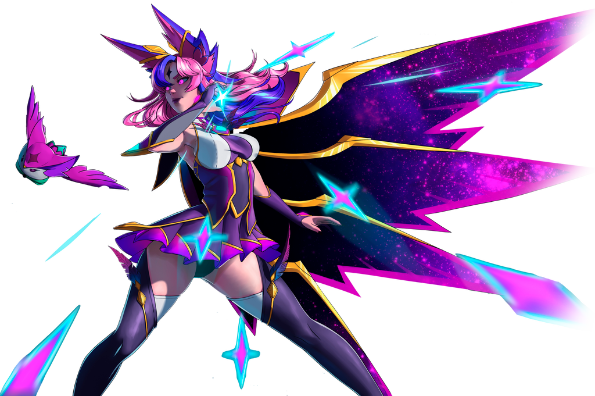

League of Legends
De qué trata
League of Legends (LoL) es un popular videojuego de estrategia en tiempo real (MOBA, por sus siglas en inglés) desarrollado y publicado por Riot Games. Fue lanzado inicialmente en 2009 y desde entonces ha ganado una enorme base de jugadores en todo el mundo, convirtiéndose en uno de los juegos en línea más populares de la historia. En League of Legends, los jugadores asumen el papel de un "invocador" que controla un campeón con habilidades únicas en un campo de batalla virtual. El objetivo principal del juego es destruir el "Nexo" del equipo contrario, mientras se defiende el propio. Para lograr esto, los jugadores trabajan en equipo, coordinando estrategias y enfrentándose en batallas épicas contra los campeones enemigos y sus ejércitos controlados por la inteligencia artificial. League of Legends ofrece una amplia variedad de campeones, cada uno con un estilo de juego único y habilidades especiales. Los jugadores pueden elegir entre una variedad de roles, como tanques, luchadores, magos, asesinos y soportes, lo que permite una gran diversidad de estrategias y tácticas de juego. El juego también cuenta con un sistema competitivo robusto, que incluye partidas clasificatorias y torneos profesionales a nivel mundial, como el Campeonato Mundial de League of Legends (Worlds), que atrae a millones de espectadores cada año. League of Legends ha tenido un gran impacto en la industria de los videojuegos y la cultura popular en general, con una gran comunidad de jugadores, eventos en vivo, contenido de transmisión en línea y una amplia gama de productos relacionados, como mercancía, libros y cómics.
Mi experiencia
Desarrollé habilidades excepcionales en League of Legends, alcanzando la liga más alta en cuatro cuentas simultáneamente y asegurando el primer puesto en el ranking de jugadores de toda América.